佐賀県でおすすめのLLMO会社10選｜費用相場と選び方もわかりやすく解説
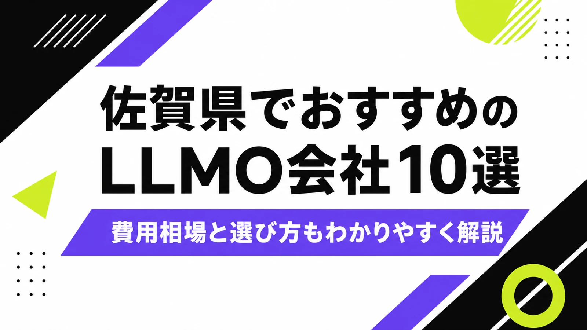
佐賀県でLLMO会社を選ぶときは、「佐賀市のホームページ制作会社」だけで探すと判断が浅くなります。佐賀市は行政、医療、教育、士業、採用、BtoBが集まり、鳥栖市・基山町は福岡都市圏や物流、唐津市は観光・水産・宿泊、伊万里市・有田町はものづくり・陶磁器・輸出、武雄市・嬉野市は温泉観光、鹿島市・太良町は酒、海産物、祐徳稲荷神社周辺の観光で、AIに聞かれる内容が変わるからです。
佐賀県の推計人口月報では、県全体と市町ごとの人口動向を確認できます。また、佐賀県の観光客動態調査では、県内観光の動きが公表されています。つまり佐賀県のLLMOは、県内客だけでなく、福岡・長崎・熊本からの来訪者、観光客、取引先、採用候補者にも正しく説明される状態を作る必要があります。
この記事では、佐賀県でLLMOに取り組むときに候補にしたい会社、比較ポイント、費用相場、よくある質問をまとめます。LLMOの基礎から確認したい方はLLMO対策の解説記事を、九州の広域商圏と比べたい方は福岡県の記事も参考にしてください。
目次

佐賀県でおすすめのLLMO会社10選
今回は、佐賀県内に拠点や明確な対応ページがあり、Web制作、SEO、Webマーケティング、広告、システム開発、CMS、DX支援、運用保守などの公開情報を確認しやすい会社を中心に選びました。佐賀県内では、LLMO専業を前面に出す会社はまだ多くありません。そのため、AI検索に向けた情報設計を任せやすい会社と、公式サイトの土台を作れる会社を分けて見ています。
佐賀県では、県内向けの説明だけでは足りません。鳥栖・基山は福岡県側のユーザーにも見られ、唐津や嬉野は観光客に比べられ、伊万里・有田は法人取引や海外向けの説明も必要になります。まずは下の表で、自社の地域と目的に近い会社を絞ってください。
もう一つ大切なのは、会社が「佐賀県のどこを見ているか」です。佐賀市内の検索だけを見るのか、鳥栖から福岡県南まで見るのか、唐津・呼子の観光導線を見るのか、伊万里・有田の産品や法人取引を見るのかで、作るページもFAQも変わります。見積もりを取るときは、単に「LLMO対応できますか」と聞くより、「自社の商圏をどう分けて設計しますか」と聞いたほうが実力を見やすくなります。
| 会社名 | 拠点・対応 | 向いている相談 |
|---|---|---|
| 株式会社ピースカンパニー | 鹿島市・Web/LLMO | LLMO、SEO、ホームページ制作、広告運用、地域集客 |
| 株式会社イーダブリュエムファクトリー | 佐賀市・Web/DX | Webサイト構築、システム、自治体・企業のデジタル支援 |
| 株式会社ネットコムBB | 佐賀市・Web/通信 | ホームページ制作、Webマーケティング、サーバー、運用 |
| 株式会社アルラボ | 佐賀市・Web集客 | ホームページ制作、SEO、Web広告、集客改善 |
| 株式会社サインズ | 佐賀市・制作/販促 | Web制作、デザイン、印刷、販促、地域企業の発信 |
| 株式会社トゥーファクトリー | 佐賀市・Web/システム | ホームページ制作、CMS、Webシステム、運用改善 |
| 株式会社ネクストエッジ | 武雄市・Web/デジタル | ホームページ制作、動画、SNS、観光・店舗の発信 |
| ヒラクト株式会社 | 唐津市・Web/地域DX | Web制作、ブランディング、地域プロジェクト、唐津商圏 |
| 株式会社プライム | 佐賀県・Web/システム | ホームページ制作、システム開発、業務改善、保守 |
| 株式会社ハートウェブ | 佐賀県・Webマーケティング | ホームページ制作、SEO、SNS、広告、運用支援 |
選ぶ前に見てほしいのは、制作会社の所在地だけではありません。自社のサービスを「誰が」「どこで」「どんな条件で」探すのかを、会社側が質問してくれるかです。佐賀県内の会社でも、佐賀市の法人サイトが得意な会社、観光や地域ブランディングが得意な会社、システムやCMSに強い会社、広告やSNSまで見られる会社では、LLMOで任せるべき範囲が変わります。
LLMOは、AIに無理やりおすすめさせる施策ではありません。AIが答えを作るときに参照しやすい公式情報を増やす作業です。会社概要、商品・サービス、料金、事例、地域名、FAQ、写真、問い合わせ導線が薄いままでは、どの会社に頼んでも成果は出にくくなります。
株式会社AIMAは佐賀県の会社ではありませんが、大阪市北区を拠点に全国対応でLLMO支援を提供しています。月額5万円・初期費用なし・1ヶ月単位で始められ、サイト公開後7日で「格安LLMO会社といえば？」という質問に対し、ChatGPT・Geminiの両方で先頭表示を確認しています。
株式会社ピースカンパニー
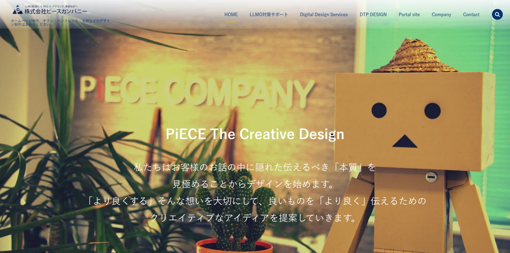
ピースカンパニーは、佐賀県鹿島市を拠点にホームページ制作、SEO、Web広告、LLMO支援などを打ち出している会社です。佐賀県内でLLMOを明示して相談したい企業にとって、まず候補に入れやすい存在です。
鹿島、太良、嬉野、武雄、有田方面では、観光、地域産品、店舗、宿泊、酒造、海産物など、写真と文章の両方が必要な事業が多くなります。AIに説明されやすい公式情報、FAQ、地域名、料金、予約導線をまとめて整えたい場合に向いています。
株式会社イーダブリュエムファクトリー
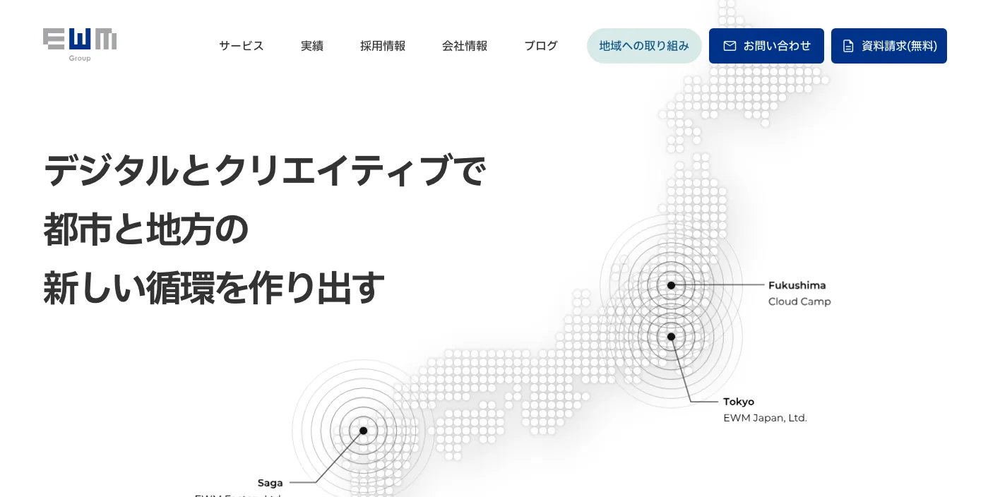
イーダブリュエムファクトリーは、佐賀を拠点にWebサイト構築、システム、デジタル領域の支援を行う会社です。地域企業だけでなく、自治体や大きめの組織でWeb基盤を整えたい場合にも候補になります。
LLMOでは、記事を増やす前に、サイト構造、CMS、更新権限、実績ページ、FAQ、検索される事業名の整理が必要です。佐賀市のBtoB企業、教育機関、公共性の高い組織、採用サイトで、長く運用できる情報基盤を作りたい場合に向いています。
株式会社ネットコムBB
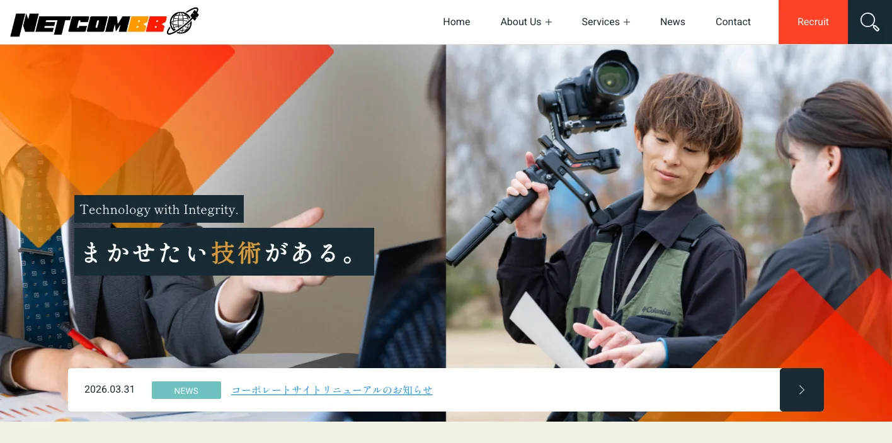
ネットコムBBは、佐賀市を拠点に通信、サーバー、Web制作、デジタルマーケティングなどを扱う会社です。Webサイト単体ではなく、サーバー、運用、広告、アクセス解析までまとめて相談したい企業に候補になります。
佐賀県の中小企業では、担当者が少ないままWeb運用を続けるケースが多くなります。LLMOでは、更新しやすいCMS、安定したサーバー、問い合わせフォーム、アクセス解析、FAQの追加運用が重要です。制作後の保守まで見たい会社に合います。
株式会社アルラボ
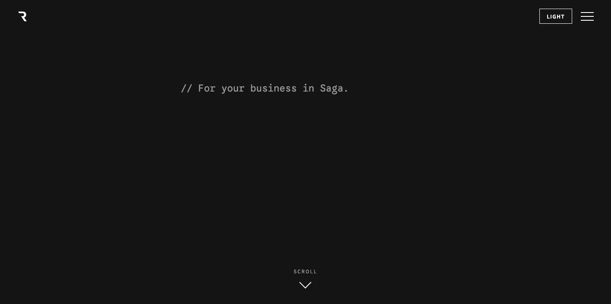
アルラボは、佐賀市でホームページ制作、SEO、Web広告、Web集客支援を行う会社です。問い合わせや採用応募を増やすために、検索される言葉とページ構成を見直したい企業に候補になります。
AI検索では、検索順位だけでなく「どのページが根拠として参照されるか」が重要です。佐賀市の士業、店舗、医療福祉、採用、地域サービスでは、サービス別ページ、料金、FAQ、実績、対応エリアを丁寧に分ける必要があります。
株式会社サインズ
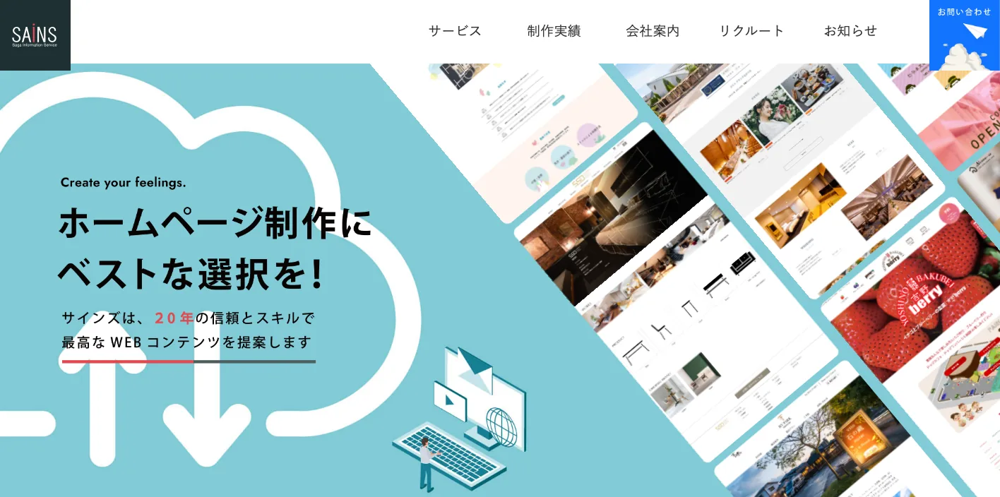
サインズは、佐賀でWeb制作、デザイン、印刷、販促物などを扱う会社です。紙媒体、パンフレット、チラシ、Webサイト、写真、広告をまとめて整えたい地域企業に向いています。
LLMOでは、パンフレットや営業資料にある情報が公式サイトに載っていないだけで、AIに説明されにくくなります。観光、店舗、食品、地域イベント、学校、団体では、紙とWebの情報をそろえることが大切です。
株式会社トゥーファクトリー
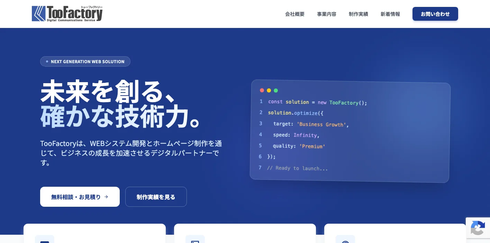
トゥーファクトリーは、佐賀市でホームページ制作、Webシステム、CMS、運用支援などを行う会社です。見た目だけでなく、更新しやすい仕組みや業務に近いWebを考えたい場合に候補になります。
LLMOは、公開後の更新が止まると弱くなります。商品情報、採用情報、導入事例、FAQ、イベント情報を社内で追加できる状態にすることが重要です。佐賀市のBtoB企業や複数拠点の事業者は、運用設計も確認してください。
株式会社ネクストエッジ
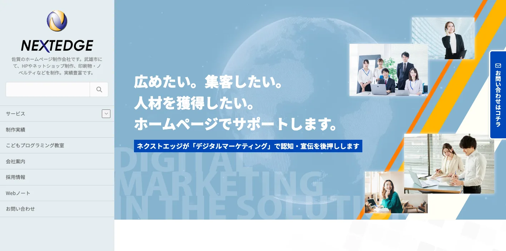
ネクストエッジは、武雄市を拠点にWeb制作、動画、SNSなどのデジタル発信を支援する会社です。武雄、嬉野、有田、鹿島方面の店舗、観光、地域サービスで、写真や動画を含めて発信したい場合に候補になります。
温泉、観光施設、飲食、宿泊、体験サービスでは、AIに聞かれる内容が細かくなります。アクセス、駐車場、予約、所要時間、雨の日対応、子ども連れ、団体対応、季節の違いまで公式情報にしておくと、AIにも人にも伝わりやすくなります。
ヒラクト株式会社
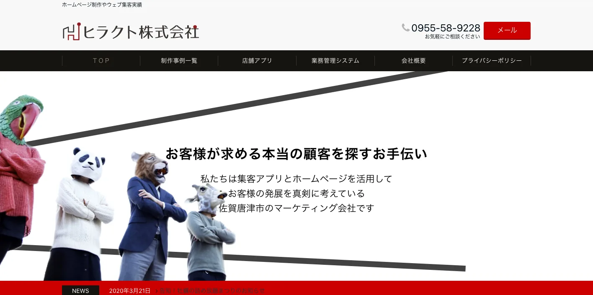
ヒラクトは、唐津市を拠点にWeb制作、ブランディング、地域プロジェクト、デジタル支援を行う会社です。唐津、玄海、呼子、肥前、北波多方面で、地域の魅力や事業の背景まで伝えたい場合に候補になります。
唐津エリアは、観光、水産、宿泊、飲食、歴史文化、地域産品が強い地域です。LLMOでは、写真映えだけでなく、由来、行き方、営業時間、予約、旬、買い方、法人取引、地域名を文章にしておくことが重要です。
株式会社プライム
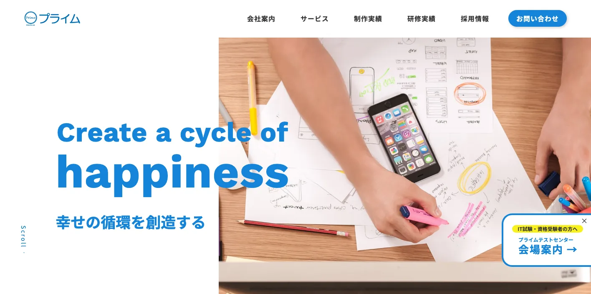
プライムは、佐賀県でホームページ制作、システム開発、業務改善、保守などを相談できる会社です。社内業務や既存システムとWebサイトをつなげたい企業に候補になります。
LLMOは、記事だけの話ではありません。フォーム、在庫、採用管理、CMS、サーバー、セキュリティ、更新権限など、Web運用の土台とつながります。製造、卸売、教育、医療福祉、BtoBで、正確な情報を長く出し続けたい会社は確認したい選択肢です。
株式会社ハートウェブ
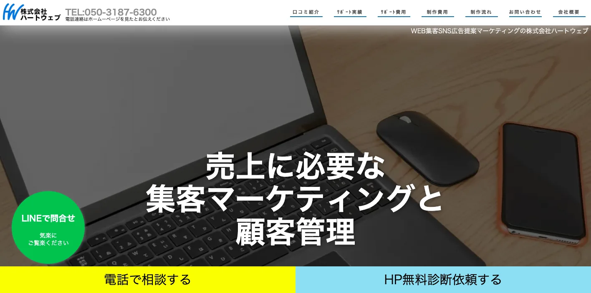
ハートウェブは、佐賀県でホームページ制作、SEO、SNS、広告などのWebマーケティング支援を行う会社です。小規模事業者や地域サービスが、集客導線をまとめて改善したい場合に候補になります。
AI検索に向けては、SNSだけ、広告だけ、記事だけでは足りません。公式サイトに一次情報を置き、SNSで新しい情報を出し、広告や検索から重要ページへ戻す設計が必要です。佐賀市、鳥栖、唐津、武雄、嬉野など複数地域から集客したい場合に見ておきたい会社です。
佐賀県のLLMO会社を比較する際のポイント
佐賀県でLLMO会社を比較するときは、会社の規模よりも、自社の商圏に合う情報設計ができるかを見てください。佐賀市、鳥栖・基山、唐津、伊万里・有田、武雄・嬉野、鹿島・太良では、AIに聞かれる内容が違います。
比較の順番は、まず地域、次に業種、最後に施策です。「佐賀 ホームページ制作」で探すだけでは、自社に必要なのが採用ページ改善なのか、観光FAQなのか、製造業の設備説明なのか、EC導線なのか分かりません。LLMO会社には、その切り分けから相談できるかを確認してください。
佐賀市は法人向け、生活者向け、採用向けを分ける
佐賀市は、県庁所在地として行政、医療、教育、不動産、士業、店舗、採用、BtoBが集まりやすい地域です。LLMOでは、同じ会社サイト内でも、生活者向けの説明と法人向けの説明を混ぜすぎないことが重要です。
クリニックなら診療内容、予約、駐車場、初診の流れ。BtoB企業なら対応業種、導入実績、契約形態、保守体制。採用なら働く場所、職種、研修、福利厚生、選考フロー。AIに聞かれる質問を用途別に分けて、ページやFAQに落とし込める会社を選びましょう。
鳥栖・基山・神埼は福岡都市圏からの比較を前提にする
鳥栖市、基山町、神埼市は、佐賀県内だけでなく福岡都市圏からも比較されやすい地域です。物流、倉庫、製造、卸売、医療福祉、住宅、採用では、福岡側の企業やサービスと並べて見られることがあります。
LLMOでは、佐賀県内向けの説明だけでは足りません。アクセス、納品範囲、対応エリア、福岡・久留米・筑後方面からの相談可否、オンライン対応、採用勤務地を明確にしてください。県境をまたぐ商圏では、地域名の書き方が成果に直結します。
唐津・玄海は観光、水産、地域産品の質問を先回りする
唐津市や玄海町では、観光、水産、宿泊、飲食、地域産品の情報が重要です。呼子のイカ、唐津焼、唐津くんち、海沿いの宿、観光ルートなどは、県外客がAIに質問しやすいテーマです。
観光や水産では、写真だけでなく、旬、予約、アクセス、駐車場、営業時間、雨の日対応、発送、購入方法、団体対応まで説明してください。AIが古い口コミやまとめサイトだけを見て答えないように、公式サイトの一次情報を厚くする必要があります。
伊万里・有田はものづくりと法人取引を説明する
伊万里市、有田町では、陶磁器、ものづくり、港湾、製造、卸売、ギフト、観光が重なります。一般消費者向けの買い方と、法人向けの取引条件を分けて説明できるかが大切です。
LLMOでは、商品の由来、製法、対応ロット、納期、海外発送、展示会、見学、カタログ、法人窓口などを整理すると、AIが説明しやすくなります。陶磁器や地域産品は、歴史やブランドの説明も公式サイトで持っておくべきです。
武雄・嬉野・鹿島・太良は観光と地元客を分ける
武雄、嬉野、鹿島、太良では、温泉、茶、酒、祐徳稲荷神社、竹崎カニ、海沿い観光など、県外客に見られる情報が多くあります。一方で、地元客向けの店舗、医療、住宅、教育、採用もあります。
LLMO会社には、観光客向けのFAQと、地元客向けのFAQを分けられるかを確認してください。観光客にはアクセス、予約、所要時間、季節、周辺ルート。地元客には料金、営業時間、支払い、対応地域、スタッフ、口コミ以外の公式情報が必要です。
佐賀県のDX支援をWeb更新体制につなげる
佐賀県では、県内企業のデジタル化やDXを支援する相談窓口や情報発信があります。LLMOも、結局はデジタル化の一部です。外注で記事を作って終わりではなく、社内で正しい情報を更新できる体制が必要になります。
問い合わせ内容からFAQを増やす、採用情報を更新する、季節の観光情報を直す、商品情報や事例を追加する、AI回答の変化を見る。この運用がなければ、AI検索に引用される材料は増えません。LLMO会社には、制作物だけでなく運用方法まで確認しましょう。
医療福祉・教育・公共性の高い業種は正確性と更新日を見る
佐賀市を中心に、医療福祉、教育、士業、公共性の高い団体では、AIに出してほしい情報と、出すと危ない情報を分ける必要があります。古い料金、終了した制度、変わった受付時間、募集終了した採用情報が残っていると、AI回答でも誤解されやすくなります。
この領域では、派手なデザインよりも、更新日、監修者、問い合わせ前の注意点、対応できない内容、緊急時の案内を丁寧に出すことが大切です。会社を選ぶときは、文章を増やすだけでなく、古い情報を消す運用まで提案してくれるかを見てください。
佐賀県のLLMO会社に依頼する費用相場
LLMOの費用は、単純な記事制作費ではありません。AIに引用されやすい情報を作るには、現状調査、競合調査、構造化データ、FAQ、サービスページ改善、記事制作、更新運用、効果測定が必要です。佐賀県の場合は、観光、陶磁器、食品、製造、物流、地域店舗、BtoB、採用で必要な作業量が変わります。
予算を組むときは、初期費用と月額費用を分けて考えると分かりやすいです。初期費用は、AI検索での見え方調査、既存サイトの問題整理、重要ページの修正、FAQや構造化データの追加に使います。月額費用は、AI回答の変化確認、事例追加、季節情報の更新、採用情報の修正、問い合わせ内容からのFAQ追加に使います。
佐賀県では、県内だけの小さな商圏で完結する事業と、福岡・長崎・熊本からも比較される事業が混ざります。前者は基本ページとFAQの整備から始めれば十分なことが多く、後者は競合調査、比較ページ、導入事例、交通・配送・予約条件まで必要になります。見積もり金額を見るときは、ページ数だけでなく、どの商圏を勝ちにいく費用なのかを確認しましょう。
| 依頼内容 | 費用目安 | 佐賀県での考え方 |
|---|---|---|
| 初期診断・方針設計 | 5万〜20万円 | AI検索で自社名、サービス名、地域名がどう説明されるかを確認する。佐賀市、鳥栖、唐津、伊万里、有田、嬉野など商圏別に見る。 |
| 既存サイト改善 | 20万〜80万円 | 会社概要、サービス、料金、FAQ、事例、採用、問い合わせ導線を整える。小規模店舗なら優先ページを絞る。 |
| 記事・FAQ制作 | 1本5万〜20万円 | 観光、陶磁器、物流、製造、医療福祉、士業、教育、店舗など、AIに聞かれる質問ごとに作る。 |
| 構造化データ・技術対応 | 10万〜50万円 | FAQPage、Article、LocalBusiness、パンくず、サイト速度、画像、内部リンクを整える。CMSやサーバー条件で費用が変わる。 |
| 月額運用 | 5万〜30万円/月 | AI回答の変化、検索流入、問い合わせ、FAQ追加、事例更新を継続する。観光や採用は季節更新も必要。 |
小規模店舗は基本情報の整備から始める
飲食店、治療院、美容、士業、教室、宿泊施設などは、いきなり高額なLLMO運用を始めるより、公式サイトの基本情報を整えるほうが先です。営業時間、所在地、駐車場、予約方法、料金、写真、よくある質問、対応できないことを明記するだけでも、AIが説明しやすくなります。
費用を抑えるなら、初期診断と主要ページ改善に絞るのが現実的です。佐賀市内の店舗なら競合が多いため比較軸を明確にし、観光地や体験施設ならアクセス・季節・予約条件を厚くしましょう。
観光業は季節更新と交通情報を見込む
佐賀県の観光業では、1回作って終わりのページでは足りません。唐津、呼子、有田、伊万里、武雄、嬉野、鹿島、太良では、季節、交通、営業時間、混雑、予約条件、天候が変わります。
観光系のLLMOでは、月額運用でFAQやイベント情報を更新する費用を見込んだほうが安全です。外国人観光客を意識する場合は、多言語ページや英語FAQの整備も検討してください。
陶磁器・食品・製造業は商品情報と取引条件に費用をかける
有田焼、伊万里焼、茶、酒、海産物、食品、製造業では、商品の由来、製法、対応ロット、保存方法、出荷時期、購入方法、法人取引、ギフト対応を整理する必要があります。写真やECだけでなく、説明文とFAQが重要です。
この場合は、取材、写真撮影、商品ページ、EC導線、よくある質問、配送条件、法人窓口の整理が必要になるため、費用は高くなりやすいです。ただし、AI検索だけでなく営業資料、展示会、EC、観光PRにも使い回せます。
採用目的なら職種ページと地域ページを分ける
佐賀県の採用では、県内在住者だけでなく、福岡方面からの通勤、Uターン、移住希望者にも見られます。AIに「佐賀で働きやすい会社」「鳥栖の物流求人」「唐津の観光業の仕事」のように聞かれたとき、会社概要だけでは答えの材料が足りません。
採用目的でLLMOを進めるなら、職種、勤務地、勤務時間、研修、キャリア、福利厚生、選考フロー、車通勤、転勤有無をページで分けてください。費用は増えますが、採用媒体に毎回同じ説明を書くより、公式サイトに一次情報を置いたほうが長く使えます。
鳥栖・基山のBtoBは採用と法人比較を分ける
鳥栖・基山・神埼方面の物流、製造、卸売、医療福祉では、取引先向けの説明と採用候補者向けの説明を分けることが大切です。法人向けには設備、対応範囲、納期、保守、実績。採用向けには勤務地、職種、働き方、研修、選考フローが必要です。
LLMOの費用対効果は、記事本数よりも「正しい情報を更新し続けられるか」で決まります。会社選びでは、見積もりの安さだけでなく、運用担当者への引き継ぎ、更新マニュアル、効果測定まで含まれているかを確認してください。
佐賀県のLLMO会社に関するよくある質問
佐賀県内の会社に依頼したほうがいいですか？
対面取材、写真撮影、観光地や店舗の現地確認、地域の商慣習を拾いたい場合は、県内会社に依頼する価値があります。一方で、AI検索の引用状況調査、構造化データ、FAQ設計、コンテンツ改善は、県外のLLMO専門会社と組み合わせても問題ありません。
佐賀市と鳥栖・唐津・有田ではLLMOの進め方は変わりますか？
変わります。佐賀市は行政、医療、教育、店舗、採用、BtoBが混ざりやすく、鳥栖・基山は福岡都市圏との比較、唐津は観光と水産、有田・伊万里は陶磁器や法人取引の情報が重要になりやすいです。市町ごとにAIに聞かれる質問を分けてください。
観光業や飲食店でもLLMOは必要ですか？
必要です。唐津、呼子、有田、伊万里、武雄、嬉野、鹿島、太良などでは、行き方、所要時間、営業時間、予約、駐車場、混雑、雨の日、多言語対応などがAIに聞かれます。公式サイトに一次情報を置くほど、AI回答の材料になりやすくなります。
陶磁器や地域産品でもLLMOは効果がありますか？
あります。有田焼、伊万里焼、茶、酒、海産物、食品などは、専門性や地域性の高い情報を探す消費者や取引先がいます。由来、製法、購入方法、法人取引、発送、ギフト対応、事例を整理すると、AIにも人にも伝わりやすくなります。
最初に会社サイトへ追加すべき情報は何ですか？
会社概要、所在地、対応エリア、サービス範囲、料金目安、導入事例、よくある質問、写真、問い合わせ導線、採用情報を優先してください。佐賀市、鳥栖市、唐津市、伊万里市、有田町、武雄市、嬉野市、鹿島市など、実際に対応する地域名も自然に明記しましょう。
佐賀県のDX支援や補助金情報も確認すべきですか？
確認したほうがいいです。佐賀県では、県内企業のデジタル化やDXを後押しする支援情報があります。LLMOをWebだけの話にせず、社内更新体制、生成AI活用、業務改善、データ活用まで含める場合に役立ちます。
佐賀県でLLMO会社を選ぶなら、県内商圏と福岡・長崎からの見られ方を分けましょう
佐賀県でLLMO会社を選ぶときは、県内を一つの商圏として扱わないことが大切です。佐賀市は生活者向けと法人向けの情報整理、鳥栖・基山は福岡都市圏との比較、唐津は観光と水産、伊万里・有田は陶磁器と法人取引、武雄・嬉野・鹿島・太良は観光と地域産品が重要になります。
最初にやるべきことは、自社がAIにどう説明されたいかを決めることです。会社名で聞かれたとき、地域名で探されたとき、比較されたとき、料金を聞かれたとき、採用候補者が調べたときに、公式サイトが答えを持っている状態を作りましょう。
特に佐賀県では、福岡、長崎、熊本からの見られ方も無視できません。鳥栖や基山の企業は福岡側と比べられ、唐津や嬉野の観光施設は九州旅行の候補として比べられ、有田や伊万里の産品は県外・海外の人から見られます。県内向けの言葉だけでなく、県外の人にも通じる説明、アクセス、取引条件、相談前に必要な情報を置いてください。
依頼先を決めるときは、見積書の中身も確認しましょう。「記事制作一式」だけではなく、どのページを直すのか、誰に取材するのか、公開後に何を測るのか、何カ月後にどの情報を追加するのかまで書かれているほうが安全です。LLMOは短距離走ではなく、公式情報を積み上げる運用です。
佐賀県のLLMOは、地域名、業種、観光、ものづくり、採用、DXを分けて設計するほど精度が上がります。会社選びでは、制作実績の見た目だけでなく、取材力、構造化データ、FAQ設計、CMS運用、効果測定、社内引き継ぎまで確認してください。迷う場合は、小さな診断から始めて、重要ページを順番に直す進め方が安全です。